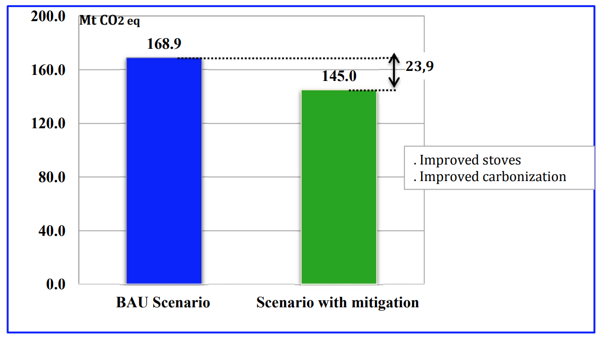

Figure 1 : Potential of GHG reduction and absorption as of year 2030, in comparison with business as usual scenario
Figure 1 : Potential of GHG reduction and absorption as of year 2030, in comparison with business as usual scenarioMadagascar is among the top-ten countries of the world having important and extensive coastal zones. Due to its geographical position, the island frequently experiences extreme weather events that significantly affect its national economy, as well as the population’s livelihood. Climate change impacts, particularly severe during the last two decades, are: (1) extended drought periods; (2) increased variability of the rainfall regime; (3) intensification of cyclones; (4) floods associated with cyclone disturbances.
Madagascar is equally committed to contribute to mitigate climate change, as well as to reduce climate change vulnerability and promote adaptation measures, although the importance of the two complementary strategies is different. Moreover, the choice of the identified adaptation sectors (agriculture, coastal zone management, human health), as well as ecosystem based adaptation approach (forests, mangroves, biodiversity, water resources) can have significant benefits on the mitigation. In fact, these actions may contribute to the strengthening of carbon stocks. Forests and mangroves sustainable management, in addition to greenhouse gas (GHG) emission reduction associated with deforestation limitation, can specifically illustrate this link.
Madagascar is a least developed country with non-significant greenhouse gases emissions. Primary sectors, particularly agriculture and fisheries, are prominent in the national economy. Furthermore, the country has an exceptional biodiversity that need to be preserved. In this context, approximately 7 million hectares, representing 11.9% of national territory is declared protected areas, as of May 2015. Electrification level is extremely low, with about 20% of households benefiting from electric lightning. This explains its dependence on fuelwood, which will persist in the medium term.
The INDC of the Republic of Madagascar was developed taking into account the national development objectives and priorities stated in main national strategic documents including the Politique Générale de l’Etat, the Plan National de Développement 2025-2019, and the Politique Nationale de lutte contre le Changement Climatique.
The national contribution of the Republic of Madagascar is the result of mitigation measures targeted to relevant sectors, compared to the national reference scenario BAU (business as usual; see Figure 1). In 2030, Madagascar aims to reduce approximately 30 MtCO2 of its emissions of GHG, representing 14% of national emissions, compared to the BAU scenario, with projections based of GHG inventory from year 2000 to 2010. This reduction is additive to the absorptions increase of the LULUCF sector, which estimated at 61 MtCO2 in 2030. Total increase in GHG absorption is expected at 32%, compared to the BAU scenario.
However, these objectives remain conditioned by financial support, which will be received from global partners (conditional contributions). Madagascar relies on the international community support to reach this objective through the United Nations Framework Convention on Climate Change (UNFCCC) and other existing or future financial mechanisms. The estimate costs of the mitigation actions will be above 6 billion US dollars (see Table 2).
If nothing is done, Madagascar’s total emissions will increase from ca. 87 MtCO2 in the year 2000 to reach 214 MtCO2 in 2030. Total absorptions will decrease from 290 MtCO2 in 2000 to 92 MtCO2 in 2030, which will change the country’s status of carbon sink of 203 MtCO2 in year 2000 to an emitting source of 22 MtCO2 in 2030. Emissions and absorptions profiles are shown in Table 1.
Table 1: Profile of emissions and absorptions during the period 2000 to 2030 (in MtCO2eq).
| Year | 2000 | 2010 | 2020 | 2030 |
|---|---|---|---|---|
| Emissions | 87,152 | 156,973 | 192,281 | 214,206 |
| Absorptions | -290,017 | -220,094 | -215,890 | -192,111 |
| Net Emissions/Absorptions | -202,865 | -63,121 | -23,609 | 22,095 |
For the LULUCF sector, Madagascar is currently developing a diversified reforestation program. This document proposes increasing the total areas under forest cover, with an indigenous species reforestation program of 270,000 ha. Such efforts will perfectly fit with the projected economic growth, by including renewable energy initiatives, as well as the updated rural electrification technologies.
Figure 1 : Potential of GHG reduction and absorption as of year 2030, in comparison with business as usual scenario
The Republic of Madagascar has identified the following actions to contribute to the reduction of GHG emissions:
Category sources include all sectors of the national economy. The geographical scope is 100% of the territory.
Figures 2, 3, 4, 5, 6, 7, and 8, shown in the Annex, correspond to the national and sectorial emissions and absorptions.
The reference scenario approach was adopted, given that Madagascar currently has no obligation to reduce its emissions regarding a reference year, under the UNFCCC. This approach is considered the best-fitting methodology as far as concern national objectives, and it is more transparent. While being realistic, it is part of the strategic policy of the country’s development. It also joins the global needs of overall emission reduction, as well as national contributions, in order to achieving the ultimate objective of the UNFCCC, which is the stabilization of GHG concentrations in the atmosphere at a level that would prevent dangerous anthropogenic interference with the climate system.
Sectors and GHG emissions reported within this document cover 99.9% of national emissions. Fluorinated gases were not taken into account, considering that their use and associated emissions are extremely low.
By 2030, the Republic of Madagascar has set up an emission reduction contribution of at least 14% of its GHG, compared to the BAU scenario, and an increase of GHG absorption of at least 32% compared to the BAU scenario. These objectives continue to be conditioned by international supports (financial, technology, capacity building), which will be received from the international community (conditional contributions).
Figures 2, 3, and 4 of the Annex display national emissions and absorptions.
Methodological approach for GHG inventories, projections, and absorptions is based on the IPCC Revised Guidelines (1996), which was supported by the 2000 and 2003 IPCC’s Good Practice Guidance series.
Data from Institut National des Statistiques, verified with data from sectorial departments in charge of the category sources, were used for the BAU emission scenario, and the projected mitigation scenario were extracted from the national database. For projection, these data were completed by demographic, economic, and social analyses.
The avoided or absorbed GHG emissions, according to the prioritised mitigation actions, were then aggregated to provide the national mitigation potential. For the LULUCF sector, land use change monitoring through remote sensing techniques was supported by traditional mapping to evaluate changes regarding emissions and absorptions.
For the considered GHG, value of Global Warming Potentials over a hundred years, drawn from the IPCC second assessment report, are as follow:
The INDC was developed using multiple stakeholders, iterative consultation process. This process has involved several bilateral meetings and a series of two national consultations. It was built and is highlighting synergies with existing national framework documents (Politique Générale de l’Etat; Plan National de Développement 2015-2019; Politique Nationale de Lutte contre le Changement Climatique). INDC concepts continue and/or support other related UNFCCC processes, including the Third National Communication (TNC), Biennal Update Reports, National Action Program of Adaptation to Climate Change (NAPA), National Appropriated Mitigation Actions (NAMA), and the National Technological Assessment (TNA). The INDC process was coordinated by the Bureau National de Coordination des Changements Climatiques (BNCCC).
Overall implementation, as well as monitoring and evaluation of the INDC will be articulated around existing or future strategic documents (among which the National Adaptation Plan). They will particularly emphasise participatory and inclusive process of all stakeholders, with a strong leadership from the Ministry of Environment, Ecology, the Sea and Forests, which is lead coordinating entity of all actions to combat climate change. The integrated approach will be used to highlight the complementarities of actions and means, in order to achieve better results.
This INDC will constitute the national reference for the Republic of Madagascar’s involvement to fight climate change. It contains actions reflecting contributions to the GHG emissions reduction and absorption. The document decrypt the country’s overall climate policy, and demonstrates clearly the national ambitions to contribute for a successful, legally binding, fair, and equitable agreement that should be adopted during the 21st UNFCCC Conference of Parties to be held in Paris by the end of 2015.
Madagascar is a least developed country with 440 USD per capita GPD, well below the average of the Sub-Saharan poor countries. More than 91% of households are categorised as poor, living with less than 2 dollars per day, with a poverty index of 36.1. National GHG emissions represent 0.2% of global emissions, therefore being a net carbon sinks of 13 MtCO2 per capita in 2000, which is 3 MtCO2 per capita as in 2010.
Despite this very low responsibility in terms of GHG emissions, Madagascar has an ambition (1) to reduce its emissions to 30 MtCO2 in 2030, compared to the reference scenario BAU; and (2) to increase the absorptions in the LULUCF sector at approx. 61 MtCO2. The combined contributions give an avoided total GHG emission of 91 MtCO2. In this context, the Republic of Madagascar’s contribution is considered as fair and ambitious.
No reduction based on of carbon credits purchased outside of Madagascar.
The general approach adopted to identify adaptation measures was concentrated on the sectors or areas regarded as most vulnerable to climate change. Although sectorial, these actions and their impacts are of national scope. They deal particularly on the impacts of climatic hazards that mostly affect the country, i.e. cyclones, floods, drought, sea-level rise, whose intensities are exacerbated by climate warming observed both at national and global levels. Adaptation measures were frameworked by the Politique Nationale de Lutte contre le Changement Climatique that has been developed in 2010. This national policy has as first strategic target to “Strengthen adaptation to climate change, considering Madagascar’s realistic needs”.
Climate modelling conducted in 2008 indicates that the trend of temperature rise, which has been observed since the year 1950s from the South, gradually shifting to the Northern part of the island since the year 1970s, tends to endure. Temperature projections by 2055, including therefore the period covered by this INDC, maintain this upward trend, even if it is done in a non-uniform manner. In fact, temperature rise is expected to be higher in the South, and relatively lower in coastal zones.
As far as concern rainfall patterns for the same period, most parts of the country will experience an increasing rainfall whereas in the East; and in the South-east, decreasing trends would be observed, according to the season. Concerning cyclones, their frequency would remain unchanging during the next decades; but the number of intense cyclones would increase. On the other hand, the trajectory of the majority of cyclones passing through the island would move northward.
The current and projected climate trends are as follow:
It is worth noting that uncertainties remain regarding climate change setting and parameters in Madagascar. These uncertainties concern mainly changing rainfall patterns. Further research and monitoring are needed to project more reliable climate change scenarios.
Madagascar is committed to evolve in the pathways leading to the sustainable economic and social development, whilst being environmentally aware and resilient to various hazards. In that sense, the Government is being implementing ambitious and liable development programs in order to boost the national economy through the Politique Générale de l’Etat, the Plan National de Développement 2015-2019 and its implementation plan. Climate actions are among the top priorities in these programs in the coming years.
The country’s willingness to struggle with climate change has led to the existence of many policy framework documents and legal instruments conducive to the implementation of actions to cope with climate change. It is noteworthy that Madagascar will undertake efforts for both the effective implementation of existing regulatory instruments, as well as to elaborate new policies in order to support the implementation of actions linked to the national contributions.
According to the Decree No. 2015-092 of March 5th 2015, the Ministry of the Environment, of Ecology, the Sea and Forest (MEEMF) is responsible for the implementation and coordination of actions, as well as the mainstreaming of climate change issues in various social and economic sectors. In fact, the National Bureau of Climate Change Coordination (BNCCC) of MEEMF ensures the role of coordinating, facilitating, supervising and monitoring of the effective implementation of all the measures/actions provided within this INDC. The BNCCC works closely with sectorial ministries, the National Climate Change Committee, sectorial and regional environmental offices, and others non-governmental actors operating in the fight against climate change.
Madagascar spends a substantial part of its annual budget in social services and infrastructures in response to the adverse effects of climate change. During the last five years, losses and damages associated with floods and cyclone events are estimated at about 470-940 million of US dollars per year. It is however worth noting that studies related to adaptation costs do not yet exist yet for Madagascar.
Given the precarious economic situation of Madagascar, the implementation of the INDC is conditioned by the availability of external financial support, especially through the financial mechanisms under the UNFCCC but also through other multilateral and bilateral sources. The effective implementation of Madagascar’s contributions requires the reinforcement of the national capacities (technical, institutional, mobilisation and absorption of funding) and transfer of technology and research from developed countries, as well as the contributions of countries and other stakeholders that are actively involved in the fight against climate change.
Costs associated with the implementation of the actions of this INDC are estimated at USD 42.099 billion (see Table 2). Madagascar, on the basis of these external contributions and national contributions, has setting up a national mechanism sustainability of actions against the climate change operational before the end of 2020. In order to demonstrate its commitment against climate change, the Republic of Madagascar with internal resources will contribute to the implementation of the actions of SCOND up 4% of the cost amounts.
Costs associated with the implementation of this INDC are estimated at 42.099 billion US dollars (see Table 2). Madagascar, based on the external contributions and domestic resources, has the intention to create a sustainable national financial mechanism that will deal in particular with climate change. This mechanism should be operational by the end of 2020. In order to demonstrate its commitment to fight climate change, the Republic of Madagascar will contribute, through the mobilisation of domestic resources, up to 4% of the INDC implementation costs.
| Component | Cost (milliards USD) |
|---|---|
| Adaptation | 28.713 |
| Mitigation | 6.370 |
| Capacities Building | 1.754 |
| Technology development and transfer, and research | 5.262 |
| TOTAL | 42.099 |
 Figure 2 : National Emissions, all sectors.
Figure 2 : National Emissions, all sectors.
 Figure 3 : National Absorptions in the Land Use, Land Use Change & Forestry (LULUCF) sector.
Figure 3 : National Absorptions in the Land Use, Land Use Change & Forestry (LULUCF) sector.
 Figure 4 : Comparison of the BAU emission scenario and the mitigation scenario in 2030 for the Energy Sector.
Figure 4 : Comparison of the BAU emission scenario and the mitigation scenario in 2030 for the Energy Sector.
 Figure 5: Comparison of the BAU emission scenario and the mitigation scenario in 2030 for the Waste sector. Shown as legend: sub sectors that are most concerned by the mitigation actions.
Figure 5: Comparison of the BAU emission scenario and the mitigation scenario in 2030 for the Waste sector. Shown as legend: sub sectors that are most concerned by the mitigation actions.
 Figure 6: Comparison of the BAU emission scenario and the mitigation scenario in 2030 for the Agriculture sector. Shown as legend: sub sectors that are most concerned by the mitigation actions
Figure 6: Comparison of the BAU emission scenario and the mitigation scenario in 2030 for the Agriculture sector. Shown as legend: sub sectors that are most concerned by the mitigation actions
 Figure 7: Comparison of the BAU emission scenario and the mitigation scenario in 2030 for the LULUCF sector. Shown as legend: sub sectors that are most concerned by the mitigation actions.
Figure 7: Comparison of the BAU emission scenario and the mitigation scenario in 2030 for the LULUCF sector. Shown as legend: sub sectors that are most concerned by the mitigation actions.
Figure 8: Comparison of the BAU emission scenario and the mitigation scenario in 2030 for the Energy sector. Shown as legend: sub sectors that are most concerned by the mitigation actions.